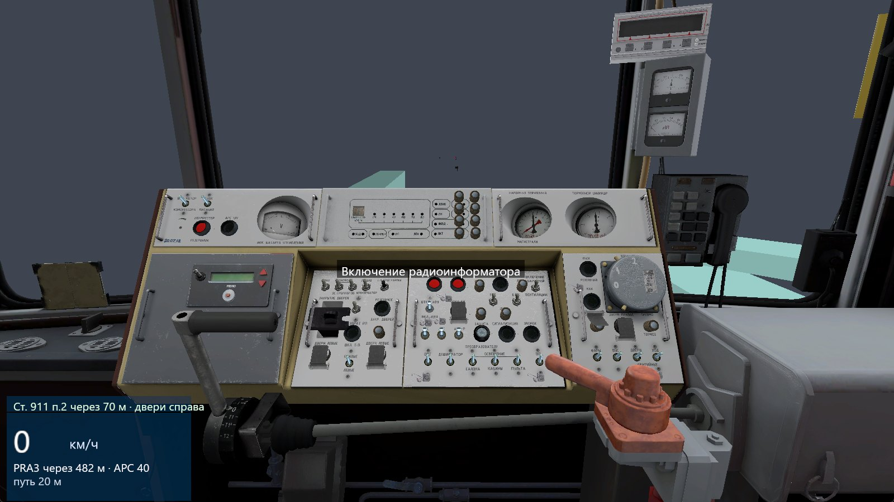
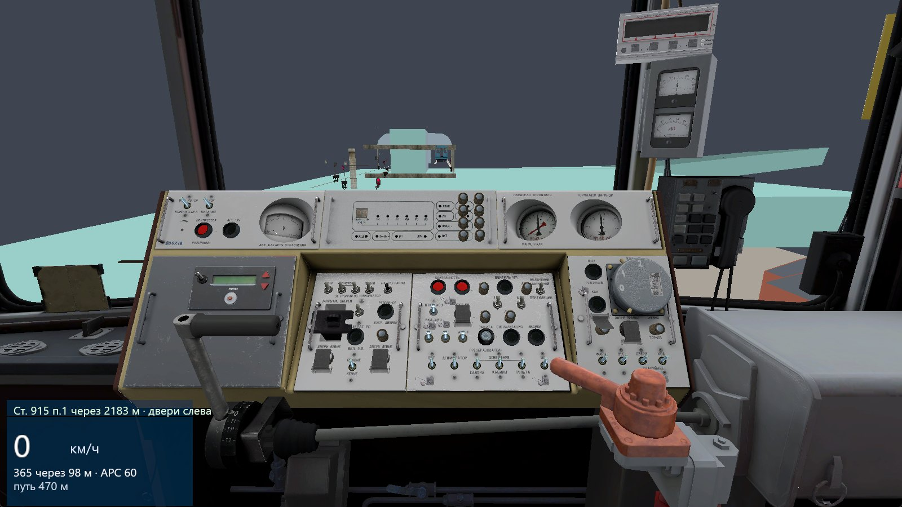
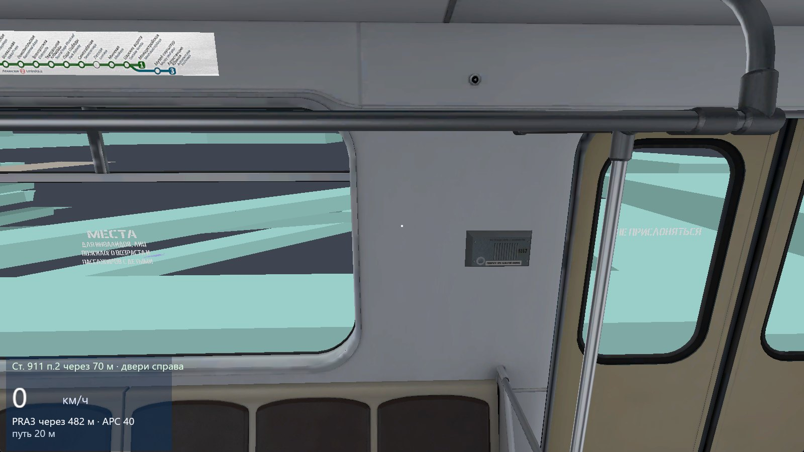
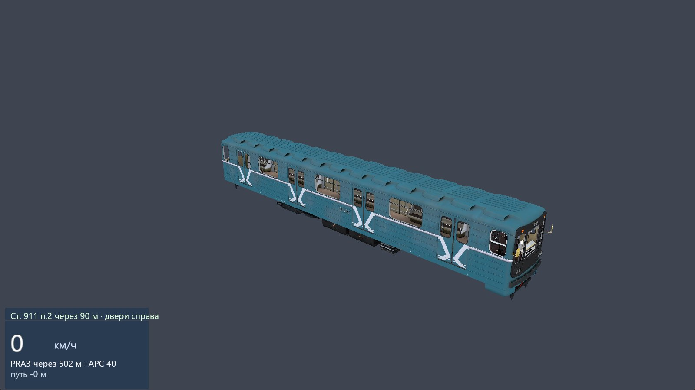
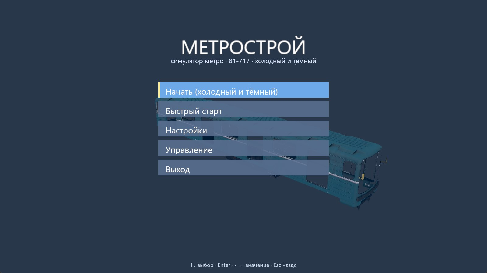
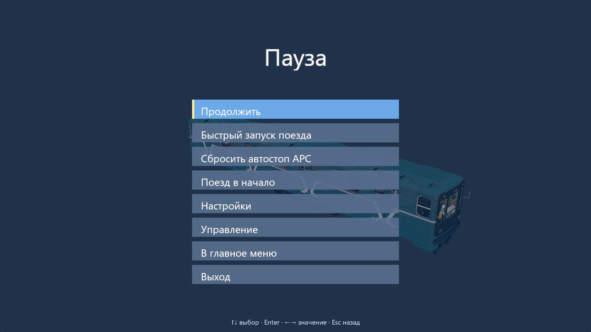
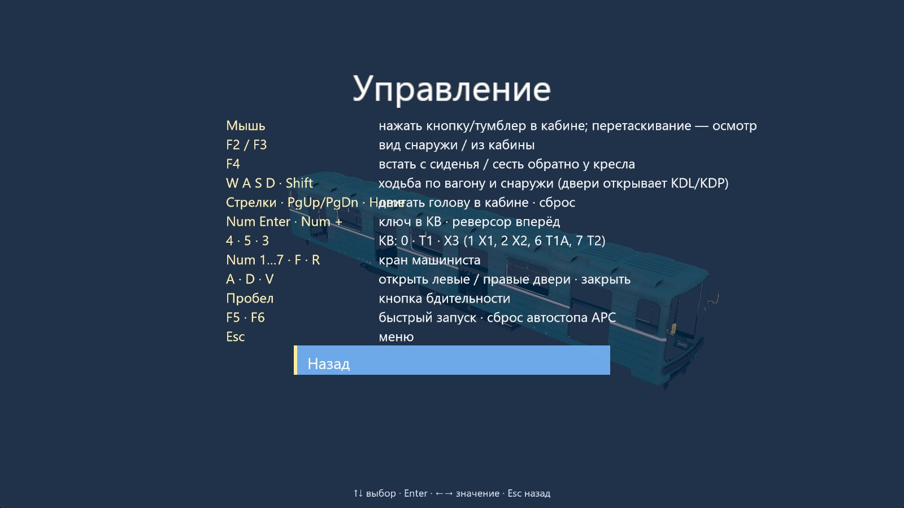

Отдельная программа, которая запускает оригинальную кабину 81-717 и Lua-логику Metrostroi прямо из ваших файлов Steam Workshop. Все 353 кнопки работают как в игре — можно завести холодный и тёмный поезд, поехать по трассе, остановиться на станции и выйти из кабины пройтись по вагону.

Проект идёт по дорожной карте от просмотрщика моделей до полноценной игры. Вот что собрано сейчас.
Все 353 кнопки и тумблера нажимаются мышью и вызывают настоящие ButtonEvent Lua. Подсказки — русские описания из языковых файлов Metrostroi.
Тяга, торможение и уклон из полей тележек, которые пишет Lua. АРС-заглушка ограничивает скорость по кодам и срабатывает автостоп.
Путь и знаки из данных карты, геометрия BSP с встроенными текстурами. Машина стоит в начале координат, мир движется вокруг.
Светофоры и путевые знаки расставлены по таблицам сущностей Metrostroi. Стоящий впереди поезд делает сигналы красными и жёлтыми.
Платформы из сущностей карты: расстояние, сторона дверей, предупреждения об открытых дверях и точность остановки.
Циклы и одиночные звуки из Lua (пневматика, реле, компрессор, качение колёс) играются из ваших Workshop-паков.
Встаньте с кресла и ходите по салону; через открытую дверь выходите на платформу. Стены карты и вагона не пускают.
Главное меню, пауза, настройки (FOV, мышь, громкость), справка, скорость, лимит АРС и следующий сигнал.
Снято в самой программе. Нажмите, чтобы увеличить. Поверхности карты без текстур Half-Life 2 пока закрашены цветом-заменителем.






Смешанная схема: ядро (физика, рендер, ввод) на Rust, системы поезда — оригинальный Lua Metrostroi поверх тонкой прослойки GMod API.
gmod.lua/entity.lua| Мышь | нажать кнопку, перетаскивание — осмотр |
| F2 F3 F4 | снаружи · кабина · встать/сесть |
| WASD Shift | ходьба (двери — KDL/KDP) |
| F5 · F6 | быстрый запуск · сброс автостопа |
| Esc | меню паузы |
Поезд стартует обесточенным. Включите батарею и автоматы, откройте краны машиниста, поставьте реверсор и КВ — и поезд поедет. Подробный порядок — в game/docs/COLD_AND_DARK.md.
Или нажмите F5 и посмотрите, как скрипт проходит процедуру за вас.
Сделано и что дальше.
Нужны Windows, Rust (MSVC), видеокарта с Vulkan/DX12 и ваши подписки на контент Metrostroi в Steam Workshop.
git clone https://github.com/LakoMoor/metrostroi-rs cd metrostroi-rs # 1) укажите путь к Workshop в game/config/game.json: # "workshop": "C:/Program Files (x86)/Steam/steamapps/workshop/content/4000" # 2) сборка и запуск cd sim cargo build --release -p viewer target/release/metrostroi-rs.exe --cab --at 300 # параметры: --nomenu --block <м> --noworld --shot out.png
Номера Workshop-паков перечислены в game/config/game.json. Подробная инструкция и заметки для ИИ-агентов (Codex, Claude Code) — в SETUP.md, AGENTS.md и CLAUDE.md.